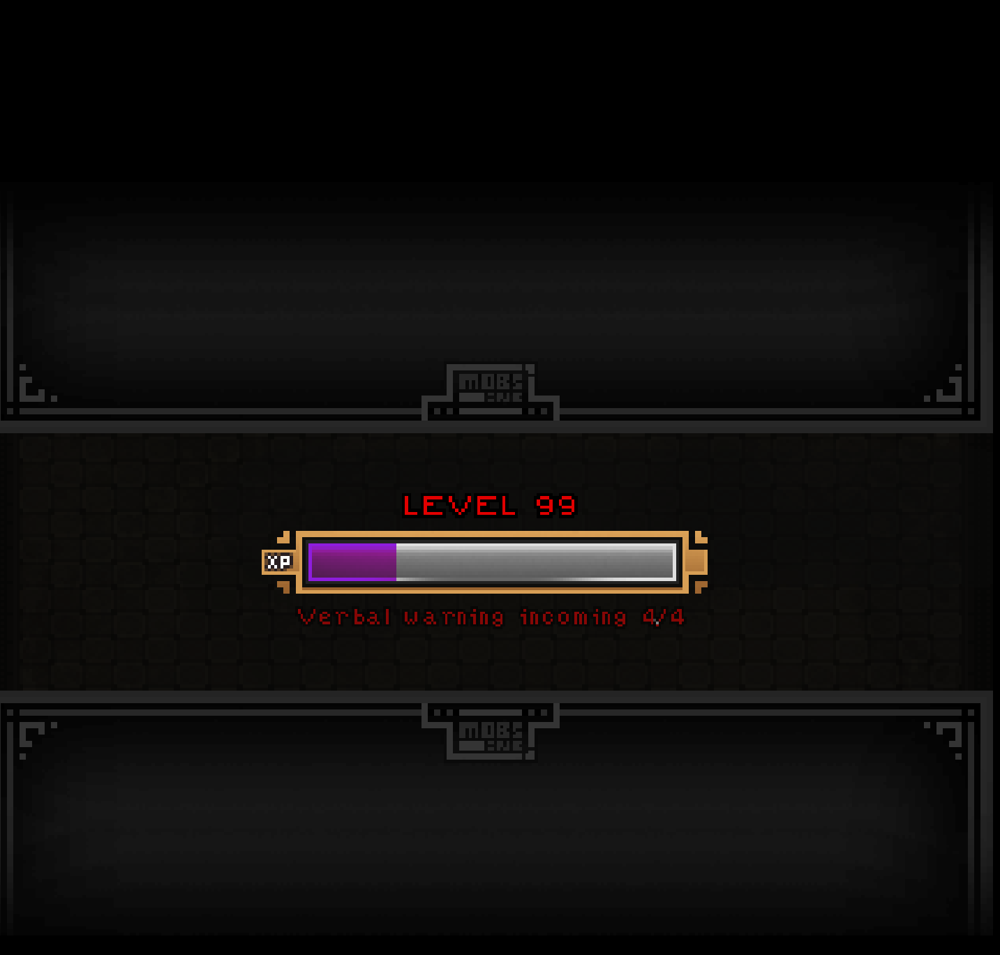

One hell of a game! Looks and feels absolutely amazing. Super engaging, the visuals, sound, and art are all so engaging - as is the combat system. Love the mouse-tracking sort-of-constant movement thing! Absolutely love the game. Great job to everyone! Would love to see more things added and/or a full version!
A very amazing game and I enjoyed playing it very much, but I feel the verbal warning thingy should have a bigger limit or it could be reset every few promotions, Otherwise, It's spectacular and I hope you keep working on it. On an unrelated note, I was hoping to get into game design and wondering if you could give me a few tips.
Really great! I enjoyed playing it and the style is adorable! If there ends up being more to the game, it would be nice for verbal warnings to be reset after a couple promotions. Regardless, it's super fun and I hope you keep working on it :)
Amazing and great game! I wish i could like have an easier mode where the warnings reset after promotions, but thats just because of my low skill level. I only get to about level 60.
I made an itch.io account just so i could praise this game in the comments section.
Its art style is incredible and the fast-paced exciting gameplay is unmatched in any html game i've ever played.
The music is amazing.
in my opinion, this game is perfect in every way.
I can't wait for mobs inc 2
OVERBOY, if you see this, don't listen to all the negative comments on this game and just know that you're seriously talented and you have created a seriously incredible game here. I played this for about seven hours non-stop yesterday and I could not pull myself away from my computer.
Hello fellow dev person totally not roboto I have a few questions about this game So I was just using the downloadable version of the game and I have a few questions/ideas. Because I really want to use this game as a background video for my Youtube
1. Can you change the volume without having to go to Volume Mixer in windows? Because I kinda want just sound effects since I would be using my own music and would prefer to know if im being charged at
2. Is it possible to resize the game itself without having to have it in full screen? Because it makes it easier to work it into my video (And I already looked through the files for settings, there weren't any)
3. Will you ever make more levels of this game. Because I feel like if you added more levels and actual options/maybe items then maybe you could make a really cool rouge-like game that you could actually sell for money instead of having to rely on Patreon. (Yes, I am aware that it is ridiculously hard to make a game of actual detail, I had experience with that)
But besides that, I really enjoyed this game and I hope to see more of you in the future. Peace
I tried downloading the game but I can't find the file that would actually start the game (I'm on windows btw) do I need to play the game on the browser or is it possible to download the game?
got to lvl 49 and died to a stray arrow. also, once you are glowing and out of health, you can do a final meteor strike or whatever it's called and take a few enemies our with you. please don't remove this, because I think it adds a desperate effect to the skeleton-thing, as if he doesn't want to get fired.
← Return to game
Comments
Log in with itch.io to leave a comment.
si tuviera dinero pagaria por este juegazo, espero con ancias la segunda entrega
I can't wait till number 2 and will be one of the first to play it, guaranteed
ahah thanks a lot !
i love the game and have a suggestion. Maybe when you are promoted, the verbal warning counter is reset? just a small thought, have a nice day!
One hell of a game! Looks and feels absolutely amazing. Super engaging, the visuals, sound, and art are all so engaging - as is the combat system. Love the mouse-tracking sort-of-constant movement thing! Absolutely love the game. Great job to everyone!
Would love to see more things added and/or a full version!
A very amazing game and I enjoyed playing it very much, but I feel the verbal warning thingy should have a bigger limit or it could be reset every few promotions, Otherwise, It's spectacular and I hope you keep working on it. On an unrelated note, I was hoping to get into game design and wondering if you could give me a few tips.
Really great! I enjoyed playing it and the style is adorable! If there ends up being more to the game, it would be nice for verbal warnings to be reset after a couple promotions. Regardless, it's super fun and I hope you keep working on it :)
Wow, this game is amazing! The graphics, the sounds, the gameplay, all polished to astronomic levels! Great job! No surprise that you won!
Amazing and great game! I wish i could like have an easier mode where the warnings reset after promotions, but thats just because of my low skill level. I only get to about level 60.
Awesome game
Good Game
What an amazing game !! Thanks a lot for making this.
What engine did you guys use ? The gameplay is surprising smooth on the web player. I love it.
this was a joy to play, thank you for making the game :D
amazing love it
Nice game!!
this is an absolute masterpiece of a game
I made an itch.io account just so i could praise this game in the comments section.
Its art style is incredible and the fast-paced exciting gameplay is unmatched in any html game i've ever played.
The music is amazing.
in my opinion, this game is perfect in every way.
I can't wait for mobs inc 2
OVERBOY, if you see this, don't listen to all the negative comments on this game and just know that you're seriously talented and you have created a seriously incredible game here. I played this for about seven hours non-stop yesterday and I could not pull myself away from my computer.
Keep it up!
Thank you so much ! It's really motivating :D
no problem!
you obviously worked very hard on this game and it shows.
Do you think Mobs Inc 2 will cost money, or will it also be free to play?
I'm not sure :) I'm working on other projects right now but Mobs Inc 2 will be done someday !
felps
the game dosent stop when you die
...ok?
so the next time i spawned in i had 1 hearts or 2 hearts
You always start with 2 hearts at the first evolution, you start with 3 or 4 hearts if your character already evolved ! ;)
oh ok. Thanks! :)
99 sooo close to 100
must get 666 after I will someday
got to level 95 my goal is 666
I almost got to lv 40 has a level one dude
Made it to level 100
is simple, its very funny i like,, its a great gam
the game is great! the only problem is that the blood begins to drop your frame rate,other than that, 10/10!
I reach lvl 97 in my third play, really good roguelite game with lots of charisma.
Reaching 100 seems to cause some frame rate issues. Might just be me, though.
max lvl. 89
Hello fellow dev person totally not roboto
I have a few questions about this game
So I was just using the downloadable version of the game and I have a few questions/ideas. Because I really want to use this game as a background video for my Youtube
1. Can you change the volume without having to go to Volume Mixer in windows? Because I kinda want just sound effects since I would be using my own music and would prefer to know if im being charged at
2. Is it possible to resize the game itself without having to have it in full screen? Because it makes it easier to work it into my video (And I already looked through the files for settings, there weren't any)
3. Will you ever make more levels of this game. Because I feel like if you added more levels and actual options/maybe items then maybe you could make a really cool rouge-like game that you could actually sell for money instead of having to rely on Patreon. (Yes, I am aware that it is ridiculously hard to make a game of actual detail, I had experience with that)
But besides that, I really enjoyed this game and I hope to see more of you in the future.
Peace
ps. this font is effing hard to read
I already solved number 2 lol
Only got to level 99 max, tried to get 100 haha. Four tries. Love the game. 
I tried downloading the game but I can't find the file that would actually start the game (I'm on windows btw) do I need to play the game on the browser or is it possible to download the game?
i got to 86
Can you make a 32 bit vesion of this game pls
can i get permission to modify the game and publish it with credit to you. or does it have copyright and i can't.
Hey no sorry you can't !
oh, ok
got to lvl 49 and died to a stray arrow. also, once you are glowing and out of health, you can do a final meteor strike or whatever it's called and take a few enemies our with you. please don't remove this, because I think it adds a desperate effect to the skeleton-thing, as if he doesn't want to get fired.
it's too hard
sorry that i'm whining i'm probably just really bad at it
Can you pause the game in browser?
Well you can, just switch to the next tab of that browser
The game still seems to be running and when I tab back I am dead
maybe it only works for my browser? I'm using Chrome btw
This is great!
Really good! One gets really eager to get that promotion. Well done!
it is the best!